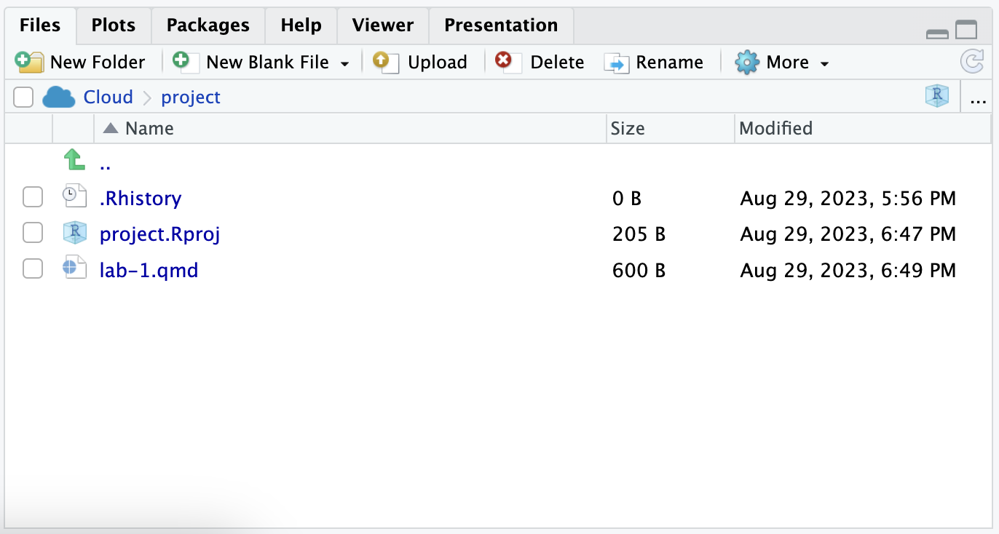

library(tidyverse)
library(palmerpenguins)Lab 1: Getting Started
The goal of this lab is to get you started using R (the computing language), RStudio (the IDE, integrated development environment), and Posit Cloud (the browser based service we are using to access RStudio).
Instructions
Go to Posit Cloud and start the project titled lab-1 - Getting Started.
Under the Files tab on the lower right, click on
lab-1.qmdto open the lab template.

- Complete the tasks in this document by adding your responses to the
lab-1.qmdfile in the editor pane (upper left).
Toolkit review
YAML
At the very top of your Quarto Markdown file (aka .qmd), you’ll find a pair of three dashed lines. Between the dashed lines is what’s called YAML. YAML stands for “YAML Ain’t Markup Language”. This is a human friendly data serialization standard for programming languages, which bascially just means that it contains meta information about your document.
Change the author name to your name and update the date with today’s date. Click the Render to render the document. What do you notice?
Note
To avoid issues that can occur while rendering, it is a good idea to render early and often. At least after every task.
Packages
In this lab we will work with two packages: the tidyverse package which is a collection of packages for doing data analysis in a “tidy” way and the palmerpenguins package which contains the data set that we’ll use.
Code Style
Any time you are writing code, you should pay attention to style and formatting conventions that will help make your code easy to read by others. Even if we’re mostly cutting and pasteing from other sources, it’s good to be aware of these conventions!
There should be a line break after each
|>in a pipeline or+in a ggplot.There should be spaces around
=signs.There should be a space after each
,Code should be properly indented.
Code should not exceed 80 characters in each line. You can use line breaks to spread longer lines of code across multiple lines. In the rendered document, you shouldn’t have to scroll to see all your code.
Code chunks should be labeled, informatively and without spaces.
These guidelines follow the tidyverse style guide. This style guide is commonly used and will help make your code more legible.
The data: palmerpenguins
Last week in class, we worked with the palmerpenguins package which contains measurement and other data for 344 penguins. There are 3 different species of penguins in the dataset, collected from 3 islands in the Palmer Archipelago, Antarctica.
glimpse(penguins)Rows: 344
Columns: 8
$ species <fct> Adelie, Adelie, Adelie, Adelie, Adelie, Adelie, Adel…
$ island <fct> Torgersen, Torgersen, Torgersen, Torgersen, Torgerse…
$ bill_length_mm <dbl> 39.1, 39.5, 40.3, NA, 36.7, 39.3, 38.9, 39.2, 34.1, …
$ bill_depth_mm <dbl> 18.7, 17.4, 18.0, NA, 19.3, 20.6, 17.8, 19.6, 18.1, …
$ flipper_length_mm <int> 181, 186, 195, NA, 193, 190, 181, 195, 193, 190, 186…
$ body_mass_g <int> 3750, 3800, 3250, NA, 3450, 3650, 3625, 4675, 3475, …
$ sex <fct> male, female, female, NA, female, male, female, male…
$ year <int> 2007, 2007, 2007, 2007, 2007, 2007, 2007, 2007, 2007…Task 1
Based on the results of
glimpse(penguins), how many rows and how many columns does thepenguinsdata frame have? What are the variables included in the data frame? Add your responses to your lab report under this paragraph.
Investigating Variable Associations
In this lab, we want to investigate the relationship between the two numerical variables bill_length_mm and bill_depth_mm.

We can start by making a simple scatterplot for these two numerical variables.
ggplot(data = penguins,
mapping = aes(x = bill_length_mm, y = bill_depth_mm)) +
geom_point()Warning: Removed 2 rows containing missing values or values outside the scale range
(`geom_point()`).
We are using the ggplot function to create this visualization. The first argument specifies what data we’re visualizing. Next, we specify how we want to use the data to make the graph. This is accomplished by defining the mapping of the data to certain aesthetic (aes) features of the plot. In this case, we want the x axis to represent a certain variable, and the y axis to represent some other variable.
Finally, we add one more layer to this plot where we define what geometric shapes we want to use to represent each observation in the data. Here we want these to be points, hence geom_point.
Task 2
Using the language introduced in section 1.2 of the textbook, how would you describe the association between these two variables?
Task 3
One thing we already know about our penguin data is that there are 3 different species. However, our scatterplot does not reflect this! Add a code chunk below and add code to produce a new scatterplot in which the points are colored by species. You can refer back to AE-01 that we did in class to see how to do this. While you’re at it, map the shape of the points to species as well!
Task 4
How does adding color change your understanding of the association between these two variables?
Task 5
Add a code chunk here to visualize the association between two other numerical variables of your choice. What do you observe?
Submit your report
Important
Before you proceed, first, make sure that you have updated the document YAML with your name! Then, render your document one last time, for good measure.
To submit your assignment to Moodle:
Go to the Files pane in the lower right of your posit-cloud window and check the box next to the PDF output of your document (
lab-1.pdf).Then, in the Files pane, go to More > Export. This will download the PDF file to your device. Save it somewhere you can easily locate, e.g., your Downloads folder or your Desktop.
Go to the course Moodle page and click on the Lab-01 assignment. There you’ll find a prompt to submit it.